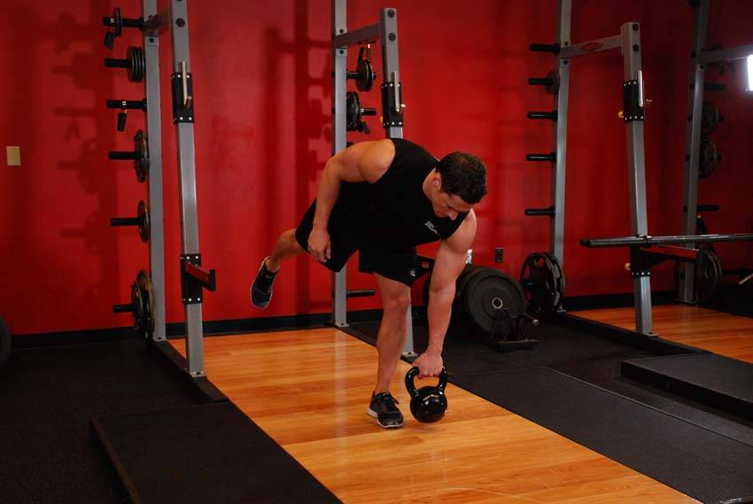

- Hold a kettlebell by the handle in one hand. Stand on one leg, on the same side that you hold the kettlebell.
- Keeping that knee slightly bent, perform a stiff legged deadlift by bending at the hip, extending your free leg behind you for balance.
- Continue lowering the kettlebell until you are parallel to the ground, and then return to the upright position.